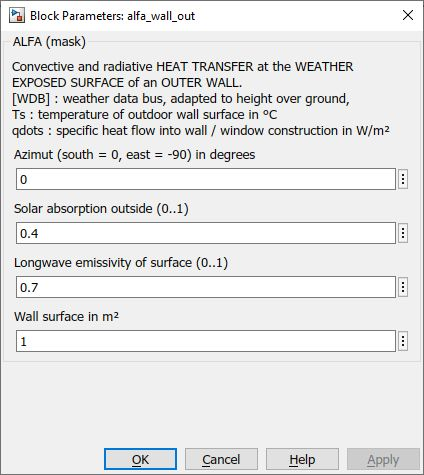

alfa_wall_out
Path: CARNOT/Basic/Heat_Transfer
Purpose:
Calculate the heat transfer of a wall to the outdoor.
Description:
Convective and radiative heat transfer at the SURFACE OF A VERTICAL WALL
towards outdoor ambient. The block is disigned to be combined with the
Wall_basic block. It is
used in the Wall_out and
Wall_with_Window
blocks.
Solar radition
Solar radiation is absorbed on the surface, weighted by the absorbtion
coefficient a.
The change of energy at the surface becomes :
dQ/dt = a
* Qdot_solar [W]
Radiative heat transfer
Long-wave radiation interaction with the surroundings or opposite surfaces
is subject to the radiative heat transfer coefficient based on law of
radiation:
Ur = e*
s* (Tamb2
+ Ts2) * (Tamb + Ts)
[W/(m2*K)]
with
e : longwave emissvity of the
surface in [-]
sSB :
Stefan-Boltzmann constant 5.67e-8 W/(m2*K4)
The heat exchange between wall-surface As (temperature Ts) and the environment (temperature Tamb) is
dQ/dt = Ur*As*(Tamb - Ts) [W]
Convective heat transfer
The convective heat transfer at the exterior surface As
of the wall is calculated according to EN 6946 :
Uc = 4.0 + 4*vwind [W/(m2*K)]
where vwind is the air velocity in m/s.
dQ/dt = Uc*As*(Tamb - Ts) [W]
Input:
| WDB | : | Weather Data Bus |
| Ts | : | temperature of the wall surface in °C |
Output:
| qdots | : | specific heat flow into wall construction in W/m2 |
Parameters and Dialog Box:

Examples:
Open the example explorer from the Matlab command window
ExampleBrowser
or load the examples via the CARNOT library.
Literature:
EN ISO 6946 : Building components and building elements -
Thermal resistance and thermal transmittance; Calculation methods
(ISO 6946:2017)
Characteristics:
| Direct Feedthrough | : | Yes |
| Sample Time | : | Inherited from driving block |
| Vectorized | : | No |